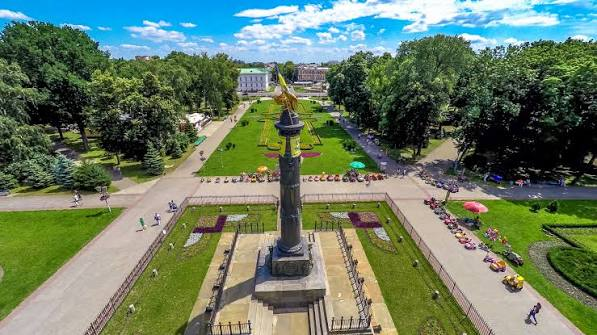
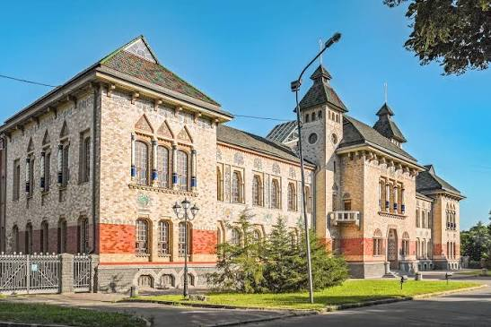

Полтава — духовна столиця України, місто з багатою історією, затишними парками та неповторною архітектурою. Вона розташована на мальовничих берегах річки Ворскли і славиться своєю гостинністю, культурою та видатними постатями, які тут жили і творили.
|
Біла альтанка |
 Корпусний сад |
 Краєзнавчий музей |